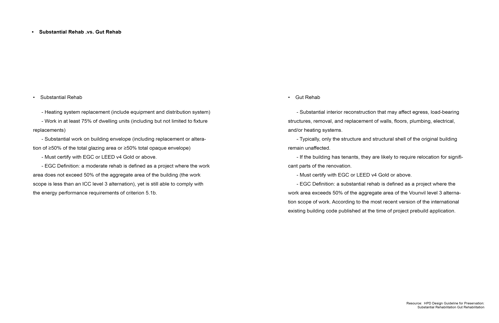
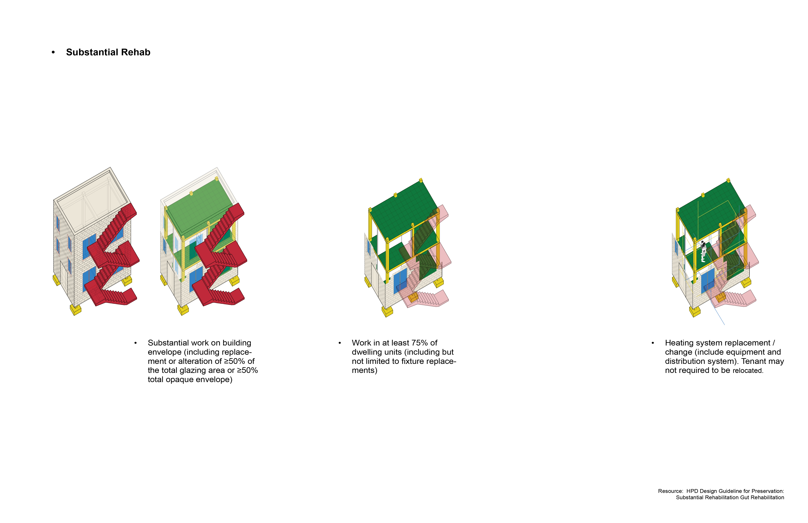
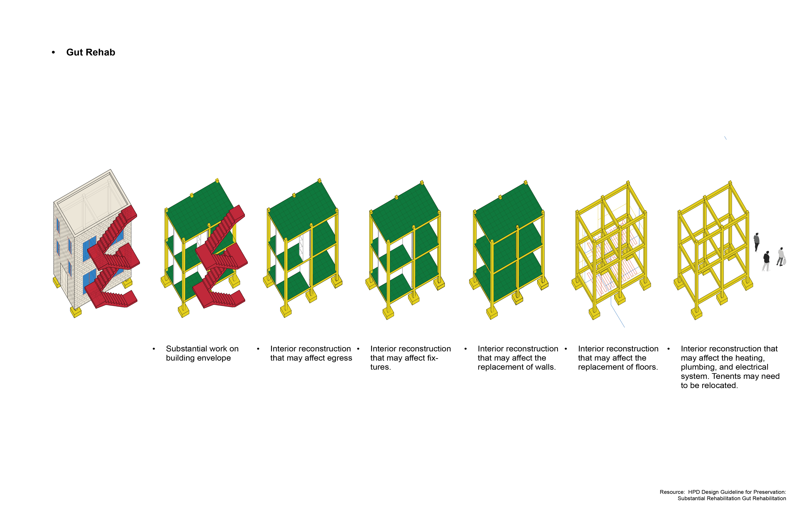
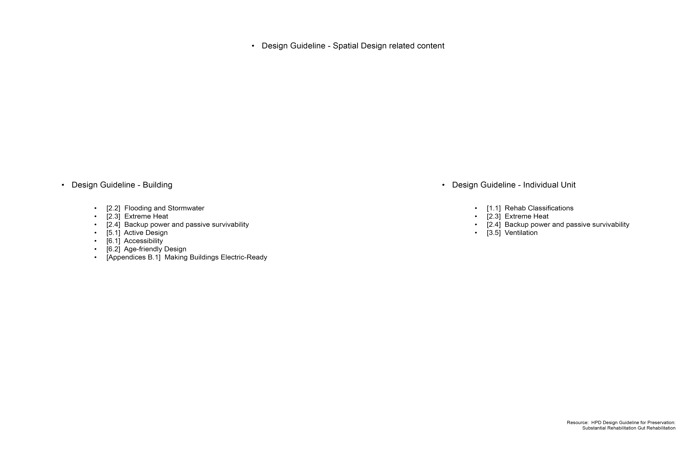
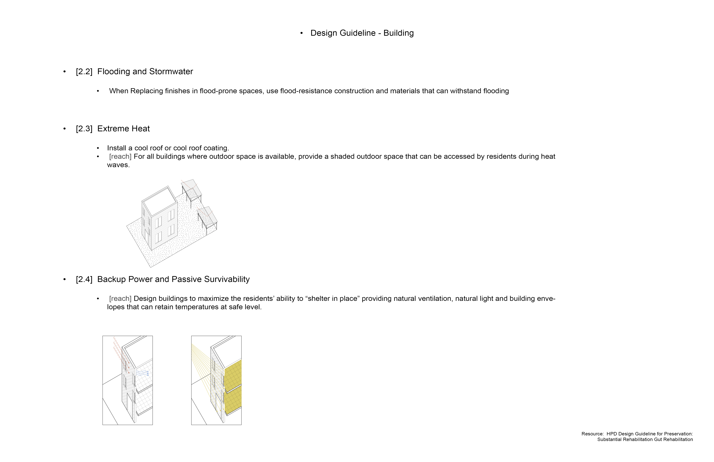
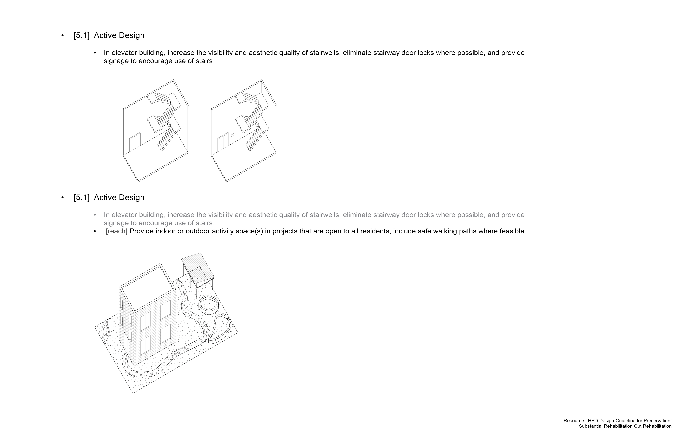
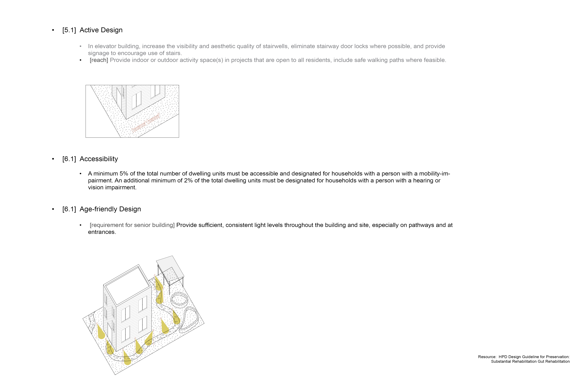
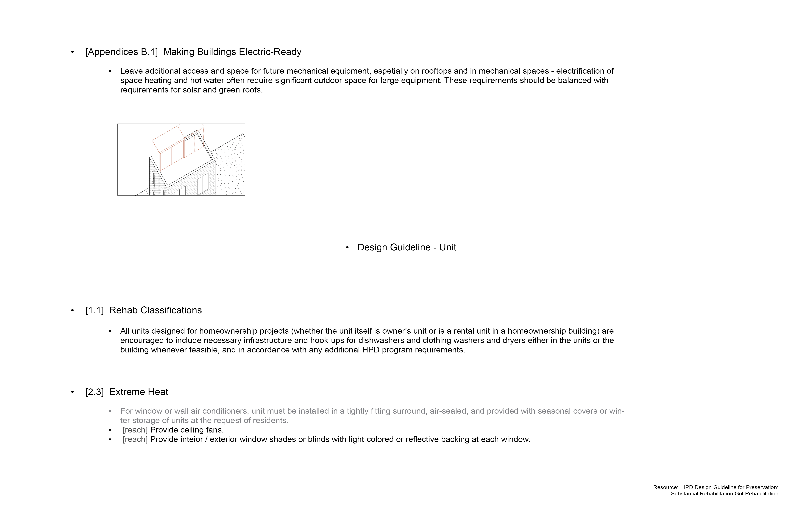
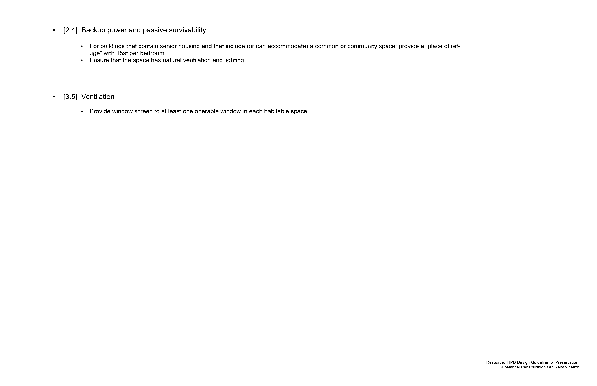

This project studies the HPD Design Guideline for Preservation in order to build a retrofit index that separates substantial rehab from gut rehab in existing housing. I translate HPD triggers such as share of units under work, percent of envelope replacement, interior reconstruction scope, and needed EGC or LEED v4 Gold certification into clear quantitative thresh- olds. The resulting index becomes a tool to classify case study renovations by depth of intervention and estimate their impact on energy performance, tenant relocation needs, and long term building preservation.
HPD Design Guideline Retrofit Index
2024 Summer
Research
Cornell University AAP_Housing Innovation Lab
Instructor: Katharina Kral








